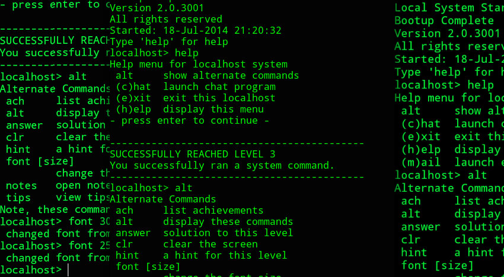

Introduction à la sécurité informatique
Rémi Martin de Abia
Introduction à l'introduction
Etudiant 4eme année
Dirlab Sécu
Master Troll 2014/2015
CTF player
Blogger
Security & Linux fan
Organisation des cours
Découpage
- 48 séances ( 2h )
- 25% cours, 25% TP, 50% fil rouge
Vous êtes libre de faire ce que vous voulez pendant la journée
A vous d'assumer par la suite :)
La journée commence par le cours, suivie du TP
Le Tp est à rendre et sera corrigé à la prochaine séance
Si aucune question n'est posée à la fin du TP je considère que les notions sont acquises
Securité
Pourquoi ?
37M De données utilisateurs dans la nature
50M Users Data
110M Client Data
( include Credit Card Number )
En résumé :
La sécurité est devenue un enjeu majeur à ne surtout pas négliger. Les potentielles failles de sécurité sont présentes partout, du développement, à la mise en production, et même lors de la maintenance
Le Hacking
Souvent le Hacking et la Sécurité informatique sont liés
Cependant le Hacking concerne plus à l'origine le coté "bidouille"
Ce que le Hacking n'est pas :
|  |
Qui sont les Hackers ?
Black Hat
"Bad Guy"
Hack for benefits, money, money & money
White Hat
"Good Guy"
Report every Hacks Aucun risque
Grey Hat
"Hacker qui a le cul entre 2 chaises"
Hacker qui a des principes mais aussi besoin d'argent
Script Kiddies
( Lammer )
Le débutant qui ne cherche qu'à utiliser des scripts tout faits
Hacktivist
Agissent pour une cause
 |
Ou trouver des hackers ?
Ou trouver des hackers ?
Conférences, CTF, Forums, IRC ..
Comment progresser :
L'introduction est terminée :D
Sécurité Informatique
Vocabulaire
Les 3 grands piliers de la sécurité : ( ou critères )
CIA
Confidentiality
Integrity
Availability
Confidentialité
La donnée n'est lisible que pour l'utilisateur qui en a les droits
Comment garantir la confidentialité ?
Chiffrement, Contrôle des accès...
Intégrité
La donnée n'a pas été modifiée
Comment garantir l'intégrité ?
Checksum, Hash
Disponibilité
La donnée / le service est accessible
Comment garantir la disponibilité ?
Redondance, Culstering, Duplication, Sauvegardes ..
Notions supplémentaires
- Non Répudiation : Ne pas pouvoir nier avoir fait une action
- Authentification : Pouvoir assurer l'identité d'un utilisateur
Les risques
Risque = ( Menace * Vulnérabilité ) / Contre-mesures
| Menace -> type d'action susceptible de nuire |
| Vulnérabilité -> faiblesse dans le systeme |
| Contre-mesures -> actions mises en place pour contrer les Menaces/Vulnérabilités |
| Une contre-mesure peut etre aussi bien une solution technique que de la formation / sensibilisation |
Qui représente un risque ?
Black Hat
La concurence
Les employés mécontents
Ils disposent des accès et peuvent causer de lourds dommages
Ex: Snowden
L'étude des risques
Pour chacun des actifs ( équipement, personne ) on va qualifier la situation pour juger de son potentiel à représenter un risque
Exemple: OVH
Attaquer une cible
Généralement une attaque se découpe en X phases
- Reconnaissance Prise d'informations
- Scanning Découverte du réseau
- Gain d'accès Attaque !
- Maintient d'accès Backdoor
- Nettoyage Vidage des logs